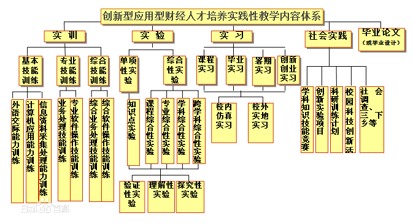

截至2015年4月，学校有专任教师1380余人，其中教授250余人、副教授490余人，博士生导师260余人，国家“千人计划”入选者3人，教育部“长江学者”特聘教授1人、讲座教授4人，四川省“百人计划”入选者6人，国家“教学名师”奖获得者2人，四川省“教学名师”16人，“全国模范教师”1人，“全国优秀教师”3人，享受国务院政府特殊津贴专家36人，有1人获“全国百名杰出留学回国人员”奖励，教育部霍英东优秀青年教师奖及资助计划获得者12人，1人获“四川省首届创新人才奖”，31人获“四川省有突出贡献的优秀专家”称号；有5人入选国家人力资源和社会保障部“百千万人才工程”，26人入选教育部“新世纪优秀人才支持计划”，74人当选四川省“学术和技术带头人及后备人选”；3人获德国“洪堡基金”项目资助；有10位教师担任四川省第五届科技顾问团顾问等。
另外，学校还引进全职海归博士210余名，特聘海外院长9名，特聘讲座教授和课程教授200余名，形成了海外人才的“群聚效应”。
长江学者特聘教授：刘锡良。
长江学者讲座教授：甘犁、刘俊、陈滨桐、Philip H. Dybvig
享受国务院政府特殊津贴专家：刘诗白、曾康霖、吴忠观、赵国良、袁文平、王永锡、雷起荃 、王德中、甘本佑、郭元晞、何泽荣、林义、庞皓、刘邦驰、郭复初、蒋明新、郑景骥、林万祥、赵东亚、刘锡良、李永禄、丁任重、张宗益、王裕国 、张合金、卓志 、赵德武、赵曦、王国清、艾孙麟、周殿昆、侯德芳、刘灿、冯亚东、马骁、高晋康。
国家人力资源和社会保障部“百千万人才工程”：刘锡良、张宗益、赵德武、杨 丹、史代敏。
教育部“新世纪优秀人才支持计划”：刘锡良、林 义、鲁 篱、陈 滔、史代敏、冯用富、杨 丹、张桥云、高晋康、蔡 春、毛洪涛、林华珍、马永强、王 擎、段 江、李 庆、吴元元、杨石磊、赵静梅、马敬堂、李永强、谭洪涛、李 涵、陈建东、毛中根、龚强。
海外博士
姓名 |
毕业学校 |
研究方向 |
|---|---|---|
刘 强 |
美国康奈尔大学 |
金融工程 |
刘 忠 |
英国剑桥大学 |
通信政策和通信企业战略 |
郑 路 |
美国斯坦福大学 |
组织理论与管理 |
冯 泓 |
美国加州大学洛杉矶分校 |
微观经济学、产业组织 |
任 品 |
美国西北大学 |
数量化金融交易 |
Maxwell PAK |
加州大学伯克利分校 |
博弈论、数理经济学、微观经济学理论 |
蒲 明 |
美国俄亥俄州立大学 |
金融数学、保险精算学、博弈论、计量经济学、概率论随机过程 |
陈建东 |
英国曼彻斯特大学 |
居民收入分配 |
周晓蓉 |
美国乔治亚州立大学 |
房地产投资、行为学 |
高 琪 |
德州农工大学 |
环境和自然资源、计量经济 |
苏明萃 |
加拿大滑铁卢大学 |
公共经济学 |
黄 健 |
荷兰阿姆斯特丹大学 |
应用经济计量 |
李 楠 |
西班牙巴塞罗那自治大学 |
社会选择与福利经济学 |
张萌旭 |
美国德州农工大学 |
计量经济学、税收经济学 |
李 毅 |
日本（国立）金泽大学 |
竞争法的比较研究 |
吴 越 |
德国法兰克福大学 |
商法、经济法、比较法 |
江 波 |
美国旧金山金门大学 |
国际商法、航空法 |
殷 盛 |
德国莱比锡大学 |
民商经济法 |
何 霞 |
日本九州大学 |
劳动和社会保障法 |
王卓宇 |
英国伯明翰大学 |
司法制度与诉讼法 |
朱 南 |
新西兰奥克兰大学 |
企业战略与决策分析、企业信息化发展、管理科学 |
杨石磊 |
美国华盛顿州立大学 |
供应链管理、库存控制、优化理论 |
李少睿 |
日本东京海洋大学 |
物流管理、供应链管理 |
陈志杰 |
英国卡迪夫大学 |
人力资源管理 |
陈晓刚 |
美国德州大学 |
在线社区中的知识合作 |
金家飞 |
英国布里斯托大学 |
中外企业并购与人力资源管理， 文化冲突和中国女性事业发展 |
唐明凤 |
法国斯特拉斯堡第一大学 |
创新管理 |
肖慧琳 |
澳大利亚悉尼大学 |
国际商务、战略管理 |
马 静 |
美国斯帝文斯理工学院 |
管理信息系统、科技对团队协作的影响 |
毛 文 |
澳大利亚蒙纳士大学 |
消费者行为研究 |
廖 毅 |
美国德雷塞尔大学 |
工商管理、营运管理 |
丁玉莲 |
加拿大阿尔伯特大学 |
消费需求 |
陈 扬 |
香港浸会大学 |
信息系统与可持续发展 |
臧文斌 |
美国肯塔基大学 |
产业组织学，健康经济学，环境经济学，计量经济学， 财政经济学 |
徐 程 |
美国霍普金斯大学 |
卫生经济 |
邓燕华 |
香港中文大学 |
政治社会学、经济社会学 |
姜 博 |
美国肯塔基大学 |
城市经济 |
黄 硕 |
英国布鲁内尔大学 |
发展经济学 |
王 珏 |
英国伦敦大学 |
跨国公司技术流动、跨国公司子公司自主权与技术外溢 |
刘 畅 |
路易斯安娜理工大学 |
金融学 |
袁义勇 |
美国密苏里大学 |
商品期货 |
陶其智 |
英国爱丁堡大学 |
公司金融 |
黄 伟 |
美国德州农工大学 |
金融计量 |
张晓玫 |
日本一桥大学 |
中小企业融资问题 |
陈屹立 |
美国俄克拉荷马州立大学 |
环境工程 |
方红艳 |
美国华盛顿州立大学 |
资产定价、公司金融 |
白 罡 |
美国塔普尔大学 |
公司金融 |
刘宗鑫 |
美国俄勒冈大学 |
金融 |
Gerasimos Lianos |
西班牙马德里卡洛斯三世大学 |
金融 |
邱志坚 |
美国弗吉利亚理工州立大学 |
复分析、泛函分析、调和分析和函数空间上算子理论 |
赖绍永 |
澳大利亚科廷科技大学 |
资产定价理论、经济模型识别、金融计量 |
马敬堂 |
纽芬兰纪念大学 |
计算数学 |
郭训香 |
美国北卡罗莱纳大学 |
泛函分析 |
段 江 |
英国诺丁汉大学 |
数字图像处理，高动态范围图像技术，计算机视觉，色彩科学 |
李 庆 |
韩国情报信息大学 |
信息检索、网络智能、数据挖掘、自然语言处理 |
叶淋宁 |
德州理工大学 |
图像处理 |
罗旭斌 |
美国莱特州立大学 |
网络资源化、算法设计、运筹学、信息安全 |
徐 赟 |
新加坡南洋理工大学 |
信息系统 |
王 颖 |
加拿大西安大略大学 |
分布式系统、人工智能 |
陈 凌 |
美国斯蒂文斯理工大学 |
电子商务、多媒体信号处理 |
伍 晶 |
新加坡国立大学 |
经济信息系统 |
刘 凌 |
英国杜伦大学 |
信誉系统 |
刘 璐 |
美国犹他州立大学 |
环境和资源经济学、城市和区域经济学 |
凌 晨 |
美国中佛罗里达大学 |
微观经济学、环境与自然资源 |
山立威 |
美国俄勒冈大学林古斯特商学院 |
实证公司金融（公司治理，董事会结构，公司改组与兼并，资本结构和股利政策）和实证会计 |
李 涵 |
美国休斯顿大学 |
产业经济学，信息经济学，商业经济学，网络经济学，数量市场营销 |
张大永 |
英国伯明翰大学 |
应用计量经济学，金融市场，宏观经济学 |
张 进 |
德州理工大学 |
应用经济学、应用公司金融学、时间序列计量经济学、商业破产预测和信用评分 |
郭建南 |
英国华威大学 |
发展经济学与产业经济学 |
吴 昱 |
美国俄克拉荷马州立大学 |
市场微观结构、货币金融学、微观金融学 |
荣 昭 |
美国佛罗里达国际大学 |
应用微观经济学、实证金融学、产业组织学 |
刘世勇 |
美国弗吉尼亚理工大学 |
管理系统工程 |
董 艳 |
英国爱塞克斯大学 |
银行风险管理， 资产证券化， 不良资产处理， 金融衍生工具 |
楚天舒 |
美国明尼苏达大学 |
宏观经济学 发展经济学 国际经济学 |
黄 霖 |
英国爱塞克斯大学 |
金融学， 实证金融分析， 资产定价 |
张 彤 |
美国俄克拉荷马州立大学 |
经济学 |
舒 艳 |
美国佛罗里达国际大学 |
国际经济学、计量经济学 |
彭 涛 |
美国密歇根州立大学 |
宏观经济学 |
胡 蓉 |
美国德州农工大学 |
农业经济 |
袁 燕 |
美国德州农工大学 |
微观经济学 |
胡又欣 |
美国俄亥俄州立大学 |
产业组织、计量经济学、行为与实验经济学 |
张 林 |
加拿大魁北克大学 |
国际金融、宏观经济学、货币经济学 |
杜在超 |
印第安那大学 |
计量经济学、金融计量、时间序列 |
David Broadstock |
萨里大学 |
交通及能源经济学 |
梁平汉 |
西班牙巴塞罗那自治大学 |
微观经济学经济、产业经济 |
张 岚 |
印第安纳大学 |
产业组织 |
许 冰 |
美国美国乔治亚大学 |
产业组织、政策分析 |
欧阳溥蔓 |
美国雪城大学 |
国际贸易、发展经济学 |
陈明花 |
美国德雷克塞大学 |
产业组织、应用微观经济学 |
孟 昕 |
加拿大曼尼托巴大学 |
产业组织、应用微观经济学 |
龚 强 |
美国西北大学 |
管理经济与战略 |
余建宇 |
法国图卢兹经济学院 |
产业组织、农业经济 |
李 莹 |
美国科罗拉多大学 |
劳动经济学 |
高 竞 |
美国马里兰大学 |
市场营销 |
尚 华 |
加拿大康考迪亚大学 |
金融计量 |
郭洋生 |
加拿大阿尔伯塔大学 |
现代英美语言文学 |
李英春 |
英国埃克塞特大学 |
英语课堂教学方法和课堂文化 |
邵璐 |
香港浸会大学 |
文学翻译 |
邓一恒 |
美国亚里桑那大学 |
跨文化交流 |
杨 霜 |
日本东京大学 |
|
李保坤 |
美国新墨西哥州立大学 |
数据挖掘、随机集合、最优算法 |
李 伊 |
美国佐治亚州立大学 |
统计诊断、模型比较、非线性统计方法 |
谭 滨 |
英国布鲁内尔大学 |
金融计量 |
汪 勇 |
美国天普大学 |
金融学 |
王 荻 |
英国伯明翰大学 |
实验金融 |
胡颖毅 |
法国塞吉蓬图瓦兹大学 |
风险管理 |
颜文业 |
美国俄亥俄州立大学 |
农业金融 |
周 葵 |
日本德岛大学 |
l 中国的城市化问题、 资源、环境价值评估；环境影响评估 |
曹 昱 |
日本福冈大学 |
合并会计 |
杜野 |
美国密歇根大学 |
金融工程、计算经济学 |
黄策 |
英属哥伦比亚大学 |
方向经济 |
周静 |
澳大利亚皇家墨尔本理工大学 |
公司金融 |
秦振江 |
奥胡斯大学 |
资产定价 |
贺泽凯 |
美国辛辛那提大学 |
区域经济 |
贺方毅 |
美国史蒂文斯理工大学 |
金融时间系统 |
张园园 |
英国南安普顿大学 |
金融学 |
史京晔 |
加拿大滑铁卢大学 |
经济学 |
曾尹嬿 |
荷兰阿姆斯特丹自由大学 |
经济学 |
郭萌萌 |
德国柏林洪堡大学 |
经济学 |
杨维 |
英国肯特大学 |
保险精算 |
徐亮 |
香港理工大学 |
物流管理 |
胡康 |
香港城市大学 |
社会资本 |
陈隆近 |
肯培基大学 |
公共经济学 |
马光宇 |
美国南伊利诺利大学 |
金融经济学 |
徐静 |
西班牙巴塞罗那自治大学 |
经济学 |
朱兢 |
加拿大麦吉尔大学 |
运营管理 |
张小波 |
美国乔治亚大学 |
国际关系 |
黄千祐 |
美国北卡罗来纳州立大学 |
经济学 |
朱毅 |
香港中文大学 |
社会心理 |
王琪 |
美国杜兰大学 |
偏微分方程 |
王涛 |
韩国忠南国立大学 |
电子商务 |
秦立崴 |
巴黎第二大学 |
私法 |
肖潇 |
美国布朗大学 |
金融工程 |
田野 |
美国北卡罗莱州立大学 |
优化 |
童清霞 |
哈佛大学 |
组织行为 |
周凡吟 |
英国帝国理工大学 |
金融统计 |
吴季 |
德雷克赛大学 |
经济学 |
谭继军 |
德州大学奥斯丁分校 |
公共经济学、环境经济学、宏观经济学 |
李筠 |
美国雪城大学 |
劳动经济学 |
Ahn-YoungBin |
纽约州立大学Buffalo |
宏观经济 |
寇纲 |
University of Nebraska |
商务智能与信息系统 |
高非易 |
澳大利亚新南威尔士大学 |
人力资源 |
颜吟芳 |
美国雪城大学 |
应用计量 |
张健 |
美国天普大学 |
财务管理 |
张翔 |
西班牙巴塞罗那自治大学 |
金融学 |
张华丞 |
亚利桑那大学 |
金融学 |
都科 |
悉尼科技大学 |
金融学 |
王琪 |
美国杜兰大学 |
偏微分方程 |
陈培敏 |
美国密苏里大学 |
风险分析 |
王涛 |
韩国忠南国立大学 |
电子商务 |
叶菁菁 |
南卫理工会大学 |
计量学 |
金小天 |
香港大学 |
英国文学 |
朱毅 |
香港中文大学 |
社会心理 |
管弦 |
路易斯安娜州立大学 |
社会工作 |
司亚卿 |
美国爱荷华州立大学 |
统计学 |
江俊佑 |
淡江大学 |
统计学 |
肖潇 |
美国布朗大学 |
金融工程 |
陈东辉 |
塔夫茨大学 |
金融工程与自动交易 |
刘腾东 |
美国德里克塞大学 |
金融市场 |
方峥 |
新加坡南洋理工大学 |
劳动经济学 |
肖辉 |
美国威斯康星大学密尔沃基分校 |
金融学 |
张琳 |
纽约州立大学布法罗分校 |
金融学 |
李卫锋 |
新南威尔士大学 |
经济学 |
赵国昌 |
澳大利亚国立大学 |
经济学 |
肖辉 |
新加坡国立大学 |
工业与系统工程管理 |
谭慧敏 |
卡耐基梅隆大学 |
市场营销 |
范丹 |
日本筑波大学 |
农村经济 |
傅十和 |
美国波士顿学院 |
城市经济学 |
高锐 |
加拿大女皇大学 |
金融计量 |
张蕾 |
英国约克大学 |
养老 |
邱奕宾 |
台湾中正大学 |
经济学 |
兰荣杰 |
美国天普大学 |
司法制度与诉讼 |
敖宇 |
美国中佛罗里达大学 |
跨文化交流、培训 |
廖林 |
澳大利亚新南威尔士大学 |
会计 |
张若瑾 |
美国华盛顿州立大学 |
经济学 |
陈磊 |
马斯特里赫特大学 |
财务会计 |
李志勇 |
英国爱丁堡大学 |
信用风险 |
付一书 |
澳大利亚阿德莱德大学 |
银行 |
李晨晨 |
新加坡南洋理工大学 |
跨文化管理 |
余津嫺 |
德州农工大学 |
气候变化 |
陈坤 |
香港中文大学 |
时间序列 |
雷涌 |
香港科技大学 |
运营管理 |
张昱城 |
澳大利亚新南威尔士大学 |
人力资源管理 |
张熠 |
纽约州立大学石溪分校 |
劳动经济学 |
牛耕 |
荷兰蒂尔堡大学 |
计量经济学 |
肖承睿 |
美国俄克拉荷马大学 |
公共经济学 |
李云荣 |
马德里卡洛斯三世大学 |
公共经济学 |
肖伟 |
瑞典斯德哥尔摩大学 |
城市与劳动经济学 |
吴亚萍 |
法国图卢兹经济学院 |
公共经济学 |
施思 |
香港浸会大学 |
旅游管理 |
白璇 |
香港城市大学 |
战略营销 |
张吉鹏 |
美国匹兹堡大学 |
公共经济学 |
倪剑 |
香港大学 |
金融工程 |
黄礼登 |
德国柏林洪堡大学 |
刑法 |
二、院系概况
截至2015年4月，学校开办33个本科专业，下辖27个学院（中心、部）等教学单位。
| 学院 | 专业 | 专业方向 |
|---|---|---|
金融学院 |
金融学 |
|
金融工程 |
||
金融学双语实验班 |
||
光华创新人才“金融与理财”实验班 |
||
保险学院 |
保险学 |
含风险管理方向 |
劳动与社会保障 |
含企业年金方向 |
|
保险学双语实验班 |
保险财务与会计方向 |
|
保险精算方向 |
||
证券与期货学院 |
金融学 |
证券与期货方向 |
经济学院 |
经济学 |
基地班 |
工商管理学院 |
工商管理 |
|
市场营销 |
||
旅游管理 |
||
物流管理 |
||
工商管理双语实验班 |
国际企业管理方向 |
|
光华创新人才“金融服务与管理”实验班 |
||
会计学院 |
会计学 |
|
会计学 |
注册会计师方向 |
|
审计学 |
||
财务管理 |
||
财务管理双语实验班 |
国际化方向 |
|
会计学双语实验班 |
国际化方向 |
|
会计学（国防生） |
||
财务管理（国防生） |
||
财政税务学院 |
财政学 |
|
投资学 |
||
税收学 |
||
统计学院 |
经济统计学 |
|
统计学 |
||
管理科学 |
||
光华创新人才“金融统计与风险管理”实验班 |
||
经济信息工程学院 |
信息管理与信息系统 |
商务智能方向 |
计算机科学与技术 |
金融信息化方向 |
|
电子商务 |
支付结算方向 |
|
光华创新人才“金融智能与信息管理”实验班 |
||
法学院 |
法学 |
|
法学-会计双学位班 |
||
光华创新人才“法学-金融”实验班 |
||
经贸外语学院 |
英语 |
翻译方向 |
商务英语 |
||
国际商学院 |
国际商务双语实验班 |
|
国际经济与贸易双语实验班 |
||
公共管理学院 |
人力资源管理 |
|
行政管理 |
||
经济数学学院 |
数学与经济学双学位班 |
|
“金融数学”光华创新人才实验班 |
||
人文学院 |
新闻学 |
经济新闻方向 |
汉语言文学 |
财经文秘方向 |
|
经济与管理研究院 |
经济与管理国际化创新人才班 |
三、学科建设
1、学科概况
截至2015年4月，学校有4个二级国家重点学科；5个省级重点一级学科（涵盖31个二级学科）和4个省级重点二级学科；有5个博士学位授予权一级学科及11个硕士学位授权一级学科；有4个博士后流动站；有57个博士学位培养专业、108个硕士学位培养专业（含18个硕士专业学位）。
二级国家重点学科：金融学、政治经济学、会计学、统计学。
博士后流动站：理论经济学、应用经济学、工商管理和管理科学与工程。
省重点一级学科：理论经济学、应用经济学、工商管理、管理科学与工程、法学。
省重点二级学科：人口学、思想政治教育、社会保障、外国语言学及应用语言学
博士一级学科：理论经济学、应用经济学、工商管理、法学、管理科学与工程。
硕士一级学科：理论经济学、应用经济学、工商管理、法学、管理科学与工程、公共管理、外国语言文学、社会学、马克思主义理论、软件工程、计算机科学与技术。
专业学位：工商管理硕士、公共管理硕士、法律硕士、会计硕士、工程硕士、农业推广硕士、金融硕士、保险硕士、应用统计硕士、税务硕士、国际商务硕士、社会工作硕士、资产评估硕士、旅游管理硕士、翻译硕士、审计硕士、体育硕士、新闻与传播硕士。
2、211工程学科建设
优势学科项目：公共品理论与公共财政建设、产业运行与产业发展、人口、资源与环境经济学、当代世界经济与西方经济理论与实践研究、当代国际贸易理论与跨国经营机制研究。
重点学科项目：中国现代金融发展与创新、中国特色社会主义市场经济基础理论创新、中国会计理论创新与实践发展研究、中国社会经济统计创新研究、中国西部地区经济社会发展重大理论与对策研究、中国企业管理行为与组织理论与创新研究。
四、教学建设

截至2015年4月，学校共有国家级精品课程9门，省级精品课程44门，国家级特色专业8门，省级特色专业16门，国家级教学团队6个，国家实验教学示范中心2个，国家级虚拟仿真实验教学中心1个，国家卓越法律人才教育培养基地1个，并建有国家经济学基础人才培养基地。
在2012年度第二批国家级大学生创新创业训练计划项目评选中。该校共有114项大学生创新创业训练计划项目通过审核并立项，其中，创新训练项目75项，创业训练项目30项，创业实践项目9项。
该校2007级博士生逯东博士论文《政府控制视角下的国企治理与公司价值研究——基于国有上市公司的经验数据》荣获2012年全国百篇优秀博士学位论文。
国家级特色专业：市场营销、经济学、金融学、财务管理、统计学、保险学、法学、人力资源管理。
省级特色专业：经济统计学、金融学、会计学、保险学、财政学、财务管理、经济学、人力资源管理、国际经济与贸易、工商管理、信息管理与信息系统、法学、劳动 与社会保障、电子商务、税收学、行政管理。
国家实验教学示范中心：经济管理实验教学中心、现代金融创新实验教学中心。
国家级虚拟仿真实验教学中心：现代金融虚拟仿真实验教学中心。
国家级教学团队：数量经济学教学团队（带头人：庞皓）、财务管理教学团队（带头人：赵德武）、政治经济学教学团队（带头人：刘灿）、工商管理教学团队（带头人：杨 丹）、会计学教学团队（带头人：蔡春）、货币金融学教学团队（带头人：殷孟波）。
国家卓越法律人才教育培养基地：法学教育实践基地。
五、国际交流
截至2015年4月，学校与近30个国家和地区的近百所知名大学、金融机构及知名企业建立了广泛的合作关系。建立与美国甲骨文公司（Oracle）合作的“金融服务中心”、与英国英杰华保险公司（AVIVA）合作的“中国保险会计师培训中心”、与日本冈三证券（Okasan Securities）共建“金融实验室”等多个专门教育机构，并与花旗银行（Citibank）、汇丰银行（HSBC）、渣打银行（Standard Chartered Bank）、澳新银行（ANZ Bank）、高盛集团（Goldman Sachs）、三井住友海上保险（Mitsui Sumitomo Insurance）、住友商事（Sumitomo）等进行合作。罗伯特A蒙代尔（Robert A. Mundell），罗伯特恩格尔（Robert F. Engle），莱因哈德施尔顿（Reinhatd Selten），詹姆斯米尔利斯（James Mirrlees），奥利弗威廉姆森（Oliver Williamson）等诺贝尔经济学奖得主先后到访该校，与师生展开高层次、前沿性对话与研讨。